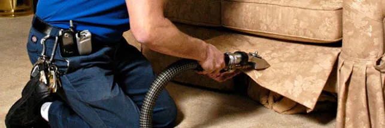
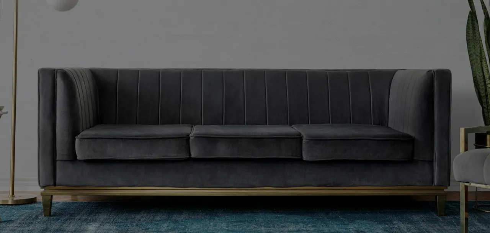

Upholstery Cleaning in Harrisburg, PA
We steam clean sofas, sectionals, chairs, recliners and dining chairs across Harrisburg and Central PA. Most pieces take 30 to 60 minutes and dry within 2 to 6 hours.
Thorough furniture and upholstery cleaning
The furniture in your home sees a lot of wear. When was the last time it had a proper deep clean? Our steam upholstery cleaning goes well beyond surface vacuuming, removing deep-seated dirt along with allergens and odors, using cleaning solutions that are completely safe around pets and children.

Our upholstery cleaning services include
- Sofas, loveseats and sectionals
- Chairs and armchairs
- Recliners
- Ottomans
- Dining room chairs
- Most fabric types, including microfiber, cotton, linen and velvet
- Optional Scotchgard® protection

Why choose Bear Carpet Care?
We don't just clean, we restore freshness. Our equipment and techniques are designed to safely lift contaminants from upholstered furniture while preserving its texture and color.
Stains and odors are neutralized, leaving your furniture visibly brighter and fresher smelling. Scotchgard® treatment can also be added to help extend the life of your furniture and keep it looking cleaner for longer.
Call now: (717) 454-7347Upholstery Cleaning: Frequently Asked Questions
What types of furniture do you clean?
We clean sofas, sectionals, loveseats, armchairs, recliners, ottomans, dining room chairs, and most upholstered furniture. We work with microfiber, cotton, linen, velvet, and most fabric blends.
Is upholstery cleaning safe for delicate or antique fabrics?
Yes. We test each piece before cleaning and select the appropriate method based on the fabric type and construction. Our goal is always to restore freshness while fully preserving your furniture.
How long does upholstery cleaning take?
Most individual pieces take 30 to 60 minutes. A full living room set typically takes 2 to 3 hours. Drying time varies by fabric but is usually 2 to 6 hours.
Can you remove coffee, wine, or pet stains from upholstery?
Yes. We treat most common stains including food, beverage, and pet stains using solutions matched to the fabric type. Results depend on the age and nature of the stain, but we achieve excellent results in most cases.
Do you offer Scotchgard protection for upholstery?
Yes. We can apply Scotchgard after cleaning to create a protective barrier that resists future stains and makes routine upkeep easier, extending the life of your furniture.
Ready to refresh your furniture?
Free, no-obligation quotes across Harrisburg and Central Pennsylvania.
Also from Bear Carpet Care: Carpet Cleaning · Oriental & Area Rug Cleaning